Marketing
Misc
- Also see Business Plots
- Propensity Model and Uplift Score Model are basically predicting the same thing with the Uplift Score Model notes going a bit further in detail with the marketing experiment
- Population targeting based on your average conversion rate (Thread)
- Low avg conversion rate: Treat those with higher probabilities of buying, because the extra nudge helps them get over the finish line.
- High avg conversion rate (>80%): Treat those that are less likely to convert
- Middling avg conversion rate: Treat those with predictions closer to 0.5
- Limitations of a simple rules based approach (typical baseline model)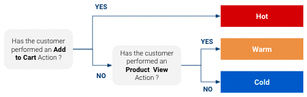
- It is likely not exploiting all the data you have at your disposal whether it be more precise information on the customer journey or your website or other data sources you may have at your disposal like CRM data.
- While it seems obvious that customers classified as “Hot” are more likely to purchase than “Warm” which are more likely to purchase than “Cold”, this approach does not give us any specific figures on how likely they are to purchase. Do “warm” customers have 3% chance to purchase ? 5%? 10% ?
- Using simple rules, the number of classes you can obtain is limited, which limits how customized your targeted response can be.
Propensity Model
- Uses GA data for your website to model probabilities of a customer purchasing
- Helps marketers to decrease cost per acquisition (CPA) and increase ROI
- You might want to have a different marketing approach with a customer that is very close to buying than with one who might not even have heard of your product.
- Also if you have a limited media budget , you can focus it on customers that have a high likelihood to buy and not spend too much on the ones that are long shots
- Example: Using Google Analytics data
- Notes from Scoring Customer Propensity using Machine Learning Models on Google Analytics Data
- Data
- Used GA360 so the raw data is nested at the session-level
- See Google, Analytics >> Misc >> Google Analytics data in BigQuery for more details on this type of data
- After processing you want 1 row per customer
- GA keeps data for 3 months by default
- Used GA360 so the raw data is nested at the session-level
- Create features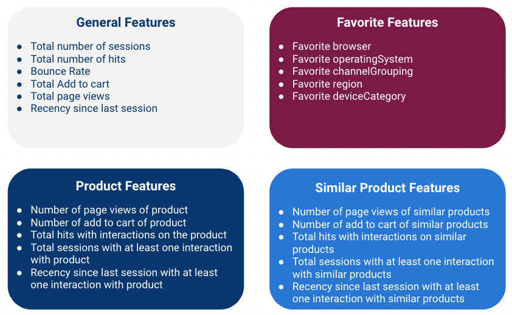
- General Features - metrics that give general information about a session
- Favorite Features - Categorical data
- A user can have multiple categories so you’ll have to count instances for each category and choose a favorite and do something about ties
- Some variables may have high cardinality
- After choosing a “favorite” for each user, group categories with low counts into an Other category.
- Depending on how many categories are left, you’ll need to choose a encoding method
- Product Features - numerics that help answer if a customer is likely to buy a specific product
- Similar Product Features - numerics for substitute products which are products similar to the product of interest
- Knowing that the customer interacted with other products with similar function and price range can definitely be useful.
- Similar products for a given product are defined using business inputs
- Notes
- Not familiar with marketing campaigns but product, similar product features might be optional depending if the campaign is for a specific product or a group of products or general sale (e.g. black friday) or maybe the campaign is taylored to each group of customers.
- Processing
- Each row is a customer
- Compute the features by aggregating values over a 3 month time window for each customer
- Compute the target (purchase/no purchase) using the sessions in a 3 weeks time window subsequent to the feature time window to detect whether the customer purchased or didn’t purchase over this window.
- If there is at least one purchase of the product in the time window, Target it equal to 1 (defined as Class 1), else Target is equal to 0 (defined as Class 0)
- Likely a strong class imbalance. Potential solutions:
- upsample/downsample as appropriate
- Switch the target variable from “making a purchase” to making an “add to cart”
- model looses a bit in terms of business signification but increasing the volume of Class 1 more than compensates
- Fit a binary classification model (add_to_cart/didn’t add_to_cart)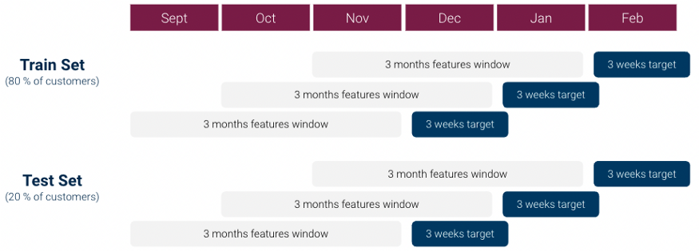
- Also see Cross-Validation >> Sliding Window CV
- Instead of each fold using a different block of observations for the validation/test set, each successive fold slides the interval of the target variable interval (e.g. 3 weeks) from the previous fold
- Split the data before creating the folds to avoid leakage.
- For each algorithm average loss (e.g. PR-AUC score) across test folds.
- Chose your algorithm and fit the final model on the whole dataset
- Calculate Model Uplift
- Sort customers by their probability score by dividing the customers into ventiles (i.e. 20 bins).
- Uplift is defined as the Class 1 Rate in the top 5% (1st bin) / the Class 1 Rate across all the dataset (all bins).
- Class 1 Rate of top 5% = number of customers in the 1st bin that added_to_cart / total number of customers in the 1st bin
- Class 1 Rate of whole dataset = number of customers that added_to_cart in the dataset / total number of customers in the dataset
- Example:
- If we have 21% Add to Cart in the top Top 5 % of the dataset vs 3% Add to cart Rate in whole dataset
- uplift = 7, which means our model is 7 times more effective than a random model.
- I’m not sure if I’d say a “random” model since this implies that customers are chosen at randomly. If the whole dataset was used, then doesn’t this imply that no “choice” made? So, I’d say this is the uplift over no model being used
- Go live with Ad campaign and calculate ROAS (Return on Ad Spend)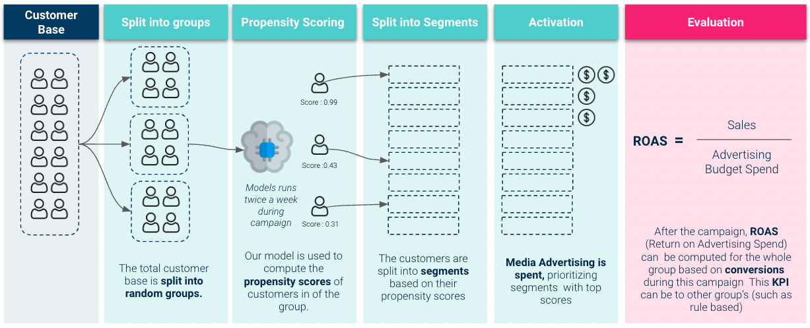
- Article didn’t really touch on the graphic but these are my assumptions
- Split into groups
- Looks like only group is chosen to take part in the experiment and the rest are control or rule-based (see Misc section).
- Split into Segments
- This looks like the binning of probabilities that occurred during the uplift calculation earlier
- Only 8 bins are shown but that is probably just because of the size of the graphic. Should probably use 20 bins like before
- Activation
- The first 3 bins get ad money. This would map to the top 5%, 10%, and 15% bins with the 5% bin getting twice the ad spend as the others.
- Evaluation
- It says it’s based on conversions but I’m guessing they get to Revenue somehow since ROAS should be in dollars
- If you can’t get the Revenue number directly see Uplift Model >> 3 types of Uplift calculations for each type of offer
- Shows how to get from Conversion Uplift to and estimate of Revenue Uplift
- Compare the model’s ROAS with Control or Rules-based groups
- Google also has Session Quality Score which comes which is available to compare the ROAS too.
Uplift Score model
- Also see
- Marketing >> Customer Segmentation, Customer Journey
- Similar goals to Propensity Model
- Notes from https://towardsdatascience.com/uplift-modeling-e38f96b1ef60
- Goal:
- identify which customers are most likely to purchase when given an offer (e.g. buy one get one free).
- Helps to control marketing costs by efficiently targeting the customers where marketing spending will be most effective.
- Steps:
- Run an experiment where you’ve taken a group of customers and randomly assigned them into treatment and control groups and recorded whether or not they purchased after receiving the offer and a period of time. Here the treatment is the custormer receiving a discount offer or a buy-one-get-one free offer.
- Calculate the three uplift metrics for each offer type.
- Fit a binary class model that provides conversion probabilities for each customer.
- Also see Propensity Model
- Fit a multiclass model whose probabilities will be used to calculate an uplift score for each customer.
- The conversion probabilities will be used to investigate which features are driving the conversion uplift.
- The upper quantile uplift scores can be used to target customers that are more likely to respond to a particular offer.
- Metric Calculations
- Uplift
- Conversion Uplift (%) = Conversion rate of treatment group - conversion rate of control group.
- “conversion” means a purchase was made.
- Larger is better.
- Purchase rate increase/decrease resulting from the offer campaign
- “conversion” means a purchase was made.
- Order Uplift = Conversion uplift * # converted customers in treatment group.
- The number of purchases as a result of the offer campaign
- Revenue Uplift ($) = Order Uplift * Average order $ value.
- Expected revenue as a result of the offer campaign
- Conversion Uplift (%) = Conversion rate of treatment group - conversion rate of control group.
- base conversion rate:
- Uplift
df %>%
filter(offer = "no offer") %>%
summarize(base_conv = mean(conversion))- offer has 3 categories: no offer, discount, buy_one_get_one (bogo)
- discount and bogo conversion rates similar. Calc by filtering the different offers
- discount conversion uplift = discount conversion rate - base conversion rate
- bogo conversion uplift similar
- # of converted customers in discount group:
df %>%
filter(offer = "discount", conversion == 1) %>%
count( )- discount order uplift = discount conversion uplift * # of converted customers in discount group
- For Revenue Uplift equation, “Average order $ value” was a constant which I guess is just a descriptive statistic you could easily calc from your sales data.
- Viz: group_by predictor var –> mutate calc conversion mean –> bar plot with x = pred var, y = conversion mean
- bars with the higher conversion means are more important in driving the conversion uplift metric
- Models
- Model conversion probabilities: xgboost with conversion as the target var
- predict on the test set
- Model GOF: on the test set, compare the predicted and real order upticks for discount
- real_order_upticks = length(test_dat) * (conversion mean for offer == discount - conversion mean for offer == no offer)
- predicted_order_upticks = length(test_dat) * (predicted conversion probabilities mean for offer == discount - predicted conversion probabilities mean for offer == no offer)
- error = abs(real - predicted)/real
- real revenue = real_order_upticks * avg order $ value (similar for predicted revenue)
- do the same for bogo
- add probabilities from a multi-class model where the classes of your target variable are:
- Treatment Responders (TR): Customers were given offer and did purchase
- Treatment Non-Responders (TN): Customer were given offer and didn’t purchase
- Control Responders (CR): Customers weren’t given offer and purchased
- Control Non-Responders (CN): Customers weren’t given offer and didn’t purchase
- Create a target variable with the classes above.
- Treatment will include customer who received either a discount or bogo offer and control is made up of the “no offer” customers.
- May need to make the target variable numeric for xgboost.
- Treatment will include customer who received either a discount or bogo offer and control is made up of the “no offer” customers.
- In the example, there was a history variable which was the total amount($) that was purchased by the customer in the past. This variable was k-means clustered into 5 clusters, and the clusters were used as a variable. e.g. customer id# 12 belongs to cluster 4. I don’t know if this is a better way of binning a continuous variable or what. Need to research if maybe it’s some sort of Kaggle thing or something shown to work well with xgboost. 5 clusters were used with no explanation of how that number was reached.
- Predictor variables used:
- recency: months since last purchase
- clustered_history: clustered history variable which was the $value of the historical purchases
- used_discount: indicator on whether the customer had used a “discount” offer before this experiment
- used_bogo: indicator on whether a customer had used a “buy one get one” offer before this experiment
- zip_code: class of the zip code as Suburban/Urban/Rural
- is_new: indicates if the customer is new
- channel: methods of contact that the customer is using, Phone/Web/Multichannel
- XGBoost model trained. Predict( ) using training data to get class probabilities.
- Take target var predicted probabilities and calculate the uplift score for each customer using the above formula.
- Model results analysis: compare uplift metrics of customers with an upper quantile (> 0.75) uplift score to those with a lower quantile (< 0.25). Use test set.
- Take the Revenue Uplift from the first section and calc the revenue uplift per targeted customer. This will be used as a baseline to compare the two quantiles against.
- base_Discount Revenue Uplift per targeted = Discount Revenue Uplift / # of customers with offer == discount
- filter test data where uplift_score > quantile(uplift_score, 0.75) –> calc the Discount Uplift metrics –> calc the test_Discount Revenue Uplift per targeted customer.
- Estimated percentage change in the Discount Revenue Uplift per targeted customer = (test_DRU_per_cust - base_DRU_per_cust) / base_DRU_per_cust
- Says that the model estimates that targeting the upper quantile uplift scores with a discount offer will lead to a
increase in revenue uplift per customer.
- Take the Revenue Uplift from the first section and calc the revenue uplift per targeted customer. This will be used as a baseline to compare the two quantiles against.
- Model conversion probabilities: xgboost with conversion as the target var
Customer Lifetime Value (CLV)
- The present value of all future cash flows of a current customer (inflation adjusted and usually cost of capital adjusted)
- Think the cost of capital adjustment is taken care of by the discount rate used in the DERL calculation below.
- Also see
- Algorithms, Product >> Cost Benefit Analysis (CBA) >> Internal Rate of Return
- Project, Planning >> Decision Models >> Terms >> Cost of Capital, Internal Rate of Return
- Morgan Stanley’s Guide to Cost of Capital
- Thread about the guide
- Allows marketers to ensure that the most valuable customers have the least churn probability in the long term
- The more valuable the customer is, the more likely you should be to build products they’d buy, to buy ad space in the magazines they read, to provide a dedicated sales person to them, and to proactively address their needs.
- Misc
- Notes from:
- https://towardsdatascience.com/calculating-customer-lifetime-values-using-a-shifted-beta-geometric-model-86bf538444f4
- http://www.brucehardie.com/notes/018/DERL_in_Excel.pdf
- Also see
- Packages: {CLVTools}, {BTYD}, {BTYDplus}, {{btyd}}
- Accountants discount the result to today’s dollar value so that you know how much each customer is worth now (that is, taking future inflation into account).
- Notes from:
- What is it used for?
- marketing campaigns — how much should we spend to acquire or retain customers?
- acquire a customer:
- Select a marketing campaign whose acquisition cost is lower than the CLV for an average active customer
- acquisition cost = total_campaign_spend / # of new customers acquired
- Select a marketing campaign whose acquisition cost is lower than the CLV for an average active customer
- retain: spend on each customer according to their current years (retention length) as an active customer
- Guessing marketing decides what percentage of the clv is appropriate to spend
- Use retention rate to judge new features to apps or webpages
- Does this marketing campaign attract users with high retention rates?
- acquire a customer:
- customer segmentation — who are our most valuable customers and what are their demographic and behavioral traits?
- See Marketing >> Customer Segmentation
- overall health of the business — how is our CLV changing over time? (growth metric)
- total company value — how can we estimate the value of our existing and future customers?
- used as a constant in loss functions for ML models
- If your model outputs a false positive and your resultant actions cause you to lose a good customer, then the CLV of that customer is a cost related to the false positive.
- marketing campaigns — how much should we spend to acquire or retain customers?
- Primary ways to increase CLV
- Decrease churn
- Increase prices
- Sell more to each customer
- Business model elements must be taken into account when calculating CLV
- contractual vs non-contractual
- contractual: subscription, credit cards, software-as-a-service
- non-contractual: grocery store, car sales
- continuous vs discrete (transaction frequency)
- continuous: credit card payments to a retail business, i.e. unpredictable
- discrete: customers pay on a fixed cycle, e.g. monthly, yearly payments
- contractual vs non-contractual
- non-contractual and continuous
- Daily activity rate for an app used as a retention rate
- Users are grouped by start date which is their cohort
- For each cohort, the number of users that are active on the app is counted each day after their start date
- Rentention rate_day = user_count_day/cohort_size
- So, there’s a “retention rate” for each day after the start date
- This data can be used to perform an A/B test to monitor how each cohort reacts in terms of app activity after a push notification or marketing campaign of some sort.
- BG/NBD Gamma-Gamma model
- BG/NBD model predicts the future number of transactions per customer, which is then fed into the Gamma-Gamma model to predict their monetary value
- Misc
- Notes from: Buy Till You Die: Understanding Customer Lifetime Value
- Example using {{btyd}}
- Also see:
- Beta Geometric Negative Binomial Distribution (BG-NBD) model: explainer, py example
- predicts the future number of purchases made by a customer as well as their probability of being alive, i.e. not churned yet
- Beta Geometric Negative Binomial Distribution (BG-NBD) model: explainer, py example
- Packages
- Notes from: Buy Till You Die: Understanding Customer Lifetime Value
- BG/NBD
- Data needed for each customer: time, volume, and value of each of their purchases
- Calculate these features:
- Recency, length of time since a customer’s last purchase or last visit to the website or the mobile app
- Can be in units of hours, days, weeks, etc (Assume Time and Recency should have the same units)
(customers["max"] - customers["min"]) / np.timedelta64(1, freq) / freq_multiplier
- Frequency, or the count of time periods the customer made a purchase in
- Remove all the rows in which frequency is zero, that is all customers who have made only one purchase
- Important note: some resources around the web claim that frequency is the number of repeat purchases the customer has made which makes it one less than the total number of purchases. This is incorrect, since frequency should ignore multiple purchases in the same time period
- Time, or the customer’s age (this is the time difference between the customer’s first purchase and the end date of our analysis, often the last date available in the data)
- Can be in units of hours, days, weeks, etc (Assume Time and Recency should have the same units)
- Monetary value, or the average revenue or income from the customer’s repeat purchases
- Recency, length of time since a customer’s last purchase or last visit to the website or the mobile app
- Assumptions
- Transactions
- Number of transactions has a Poisson dgp
- λ = 2 means that a customer makes two purchases per time period, on average
- The rate λ is different for each customer, and its distribution over all customers is assumed to be the Gamma distribution
- When the number of transactions is 0, the customer has churned
- Number of transactions has a Poisson dgp
- Churn
- After each purchase, a customer might churn with some probability p. This probability is different for each customer, and its distribution over all customers is assumed to be the Beta distribution.
- Transactions
- Use model to estimate distribution parameters:
- Model takes Recency, Frequency, and (I think) Time variables
- Gamma (customer transaction rates): r and α
- Beta (churn probability): a and b
- Plot distributions with parameter estimates to see if they look reasonable
- Frequency-Recency Heatmap
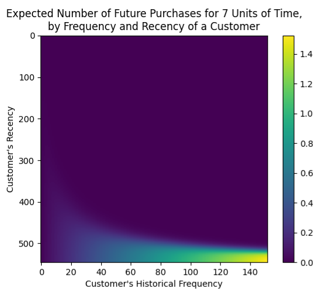- Colored by the expected number of future purchases in a predefined time span (e.g. 7 days) for a given Recency and Frequency value of a customer
- Note that 0 on the y-axis is at the top
- Interpretation
- Bottom-Right: we can expect the most purchases from customers who have historically featured high frequency and high recency
- Top-Right: The usually high-freq customers that haven’t bought in a while
- Bottom-Left: Customers that buy infrequently, but we have seen them recently, so they might or might not buy again — hence the tail of decreasing predictions stretching towards the bottom-left corner
- Bottom-Right: we can expect the most purchases from customers who have historically featured high frequency and high recency
- Churn Heatmap
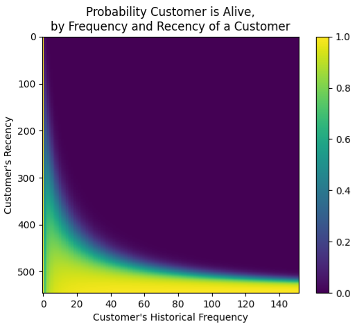- Colored by churn probability for a given Recency and Frequency value of a customer
- Note that 0 on the y-axis is at the top
- Interpretation
- Bottom-Right: high-freq-recently-seen customers are the most likely to have not churned (“still alive”)
- Daily activity rate for an app used as a retention rate
- contractual and discrete
- customers are cohorted based on how many consecutive years they’ve been active customers. An active customer is a customer with a current contract/subscription.
- Cohort 1 has customers who have their initial contract + 3 contract renewals.
- 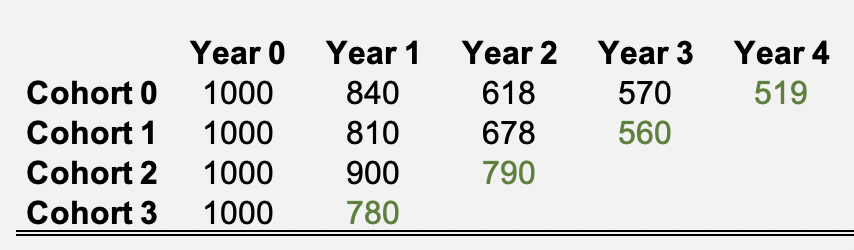
- Green represents current active customers
- Cohort 1 has customers who have their initial contract + 3 contract renewals.
- The retention rate, r, for each cohort, k, and number of active years , t, is the ratio of active customers, c, for that subscription year and the previous subscription year.
- 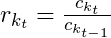
- example for cohort 1, 2nd interval: 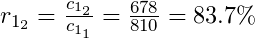
- 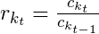
- The churn rates which are just 1-r.
- The annual survival rates for each cohort
- where k is the cohort and t is the final contract year for which r is being calculated.
- For cohort 0:
- 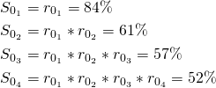
- where k is the cohort and t is the final contract year for which r is being calculated.
- Forecasting survival rates
- Churn rates can be modeled with Beta Regression which can be used to calculate retention rates and therefore survival rates
- A basic forecast model would be to use the average retention rate of all the cohorts
- Example: If 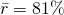 , then 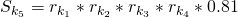
- Using this method neglects the fact that as customer loyalty (# of consecutive subscriptions) increases the likelihood a customer subscribes the next year (i.e. survives) increases
- Technically, the literature says that a “shifted-beta-geometric (sBG) distribution” is used to calculate the α and β parameters of a Beta Distribution. Unless this is a different calculation from a standard Beta distribution, the parameters can be calculated using the sample mean and sample standard deviation. Compare “DERL PAPER” bkmk’d in the CLV folder with calculation from bkmk in Beta regression folder.
- Curves and interpretations wrt to various Beta Regression parameter values, α and β
- 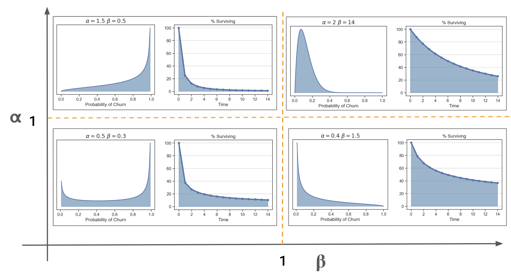
- 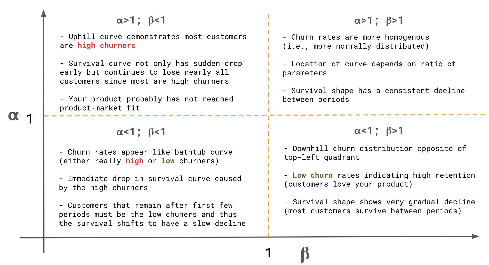
- A survival rate can be calculated using the retention rates from formula using the model estimates for α and β.
- 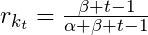
- A basic forecast model would be to use the average retention rate of all the cohorts
- Churn rates can be modeled with Beta Regression which can be used to calculate retention rates and therefore survival rates
- Compute Discounted Expected Residual Lifetime (DERL)
- A CLV measure for contractual businesses
- 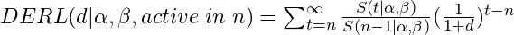
- Formula assumes a constant net cashflow per period (e.g. contract = $1000 per customer per year)
- “active in n” refers to number of years as an active customer
- see first sentence of the “contractual and discrete” section above for an active customer definition
- see 3rd bullet below for an example
- d: discount rate (aka hurdle rate)
- Minimum expected return on investment. 10% is common and 5% is usually the minimum, i.e. a replacement-level ROI. If the discount rate is 10% percent, then that says that the current investment strategies are yielding at least 10%, so this one should be at least that good. The thinking is, “why spend money on this investment if it has a lower discount rate instead of putting it to work in one of the other strategies that’s yielding at least 10%?”
- The summation goes from n to infinity but in practice, is stopped when term values approach zero.
- Example goes out to t = 200 and the last term is equal to 5 x 10^-12. which seems like extreme overkill to me.
- Example for cohort 2: 3 active years with 2 renewals
- Calculate the Survival Rates out to the specified number of terms
- S(0) = 1, S(1) = [(beta + (t=1) -1) / (alpha + beta + (t=1) - 1)] * S(0), S(2) = same equation with t=2 * S(1) … compute until S(200)
- Conceptually, S(0) makes sense because t = 0 is the initial contract, so everyone “survived.” Therefore the survival rate = 1. But it doesn’t really follow if you set t = 0 in the retention rate equation
- S(0) = 1, S(1) = [(beta + (t=1) -1) / (alpha + beta + (t=1) - 1)] * S(0), S(2) = same equation with t=2 * S(1) … compute until S(200)
- Calculate the Survival Rate Ratios, 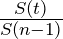 , first half of the DERL equation
- We calculating for cohort 2, where custormers have n = 3 active years, so the denominator with always be n-1 =2. The number just follows the index, t, in the summation.
- S(3)/S(2), S(4)/s(2), …, S(200)/S(2)
- Calculate the Discount Rate half of the equation using a 10% discount rate, 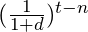 :
- (1/(1+0.10))^(3-3), same^(4-3), …, same^(200-3).
- So this ratio acts a scaling factor than makes the terms smaller and smaller.
- derl_2 = sum(element-wise product of last two steps)
- In R, this would some kind of recursive loop? Maybe a map2 function with a vector with t-values and a constant n vector (so as not to hard-code) as arguments. Or a pmap and include a constant, d vector
- for a customer who has made two contract renewals (evaluated just before the point in time at which the third contract renewal decision is to be made)
- Calculate the Survival Rates out to the specified number of terms
- Value of Consumer Base
- Value = [(# number of consumers in cohort 0) * contract_value * derl_0] + [(number of consumers in cohort 1) * contract_value * derl_1] + …
- customers are cohorted based on how many consecutive years they’ve been active customers. An active customer is a customer with a current contract/subscription.
Churn
- Misc
- Also see
- Marketing >> Workflow >> Churn examples
- Diagnostics, Classification >> Scoring >> Comparison of similar scoring models & Custom Cost Functions
- Google, Analytics >> Explore >> User Lifetime & Segment overlap
- Product Development >>
- Why do leave and stay?
- Metrics >> Growth Metrics
- Algorithms, Product >> Retention Analysis
- Also see
- It usually costs more to acquire a customer than it does to retain a customer. Focusing on customer retention enables companies to maximize customer revenue over their lifetime.
- Potential targets
- Cancellation of last product, no transactions in the last three months
- Also contractual (e.g., bank) and non-contractual (e.g., e-shop) client relationships.
- Potential features
- socio-demographic data, data on products owned, historical transactions, client-company interaction (i.e. active user?), e-commerce behaviour
- Also important to be careful about how far in advance we want to estimate the propensity to leave. In other words, how long is the time between the day we look at clients through the available features and the day we can tell if they have left? If that time is too short, we won’t have much time to make any kind of response. If, on the other hand, it is too long, the model will be less accurate and up to date.
- CHAID (chi-squared automated interaction detection)
- old school, interpretable method
- Bins continuous variables, integers coerced to factors, and seems to be a decision tree model where the splits are chosen by a chi-square test between each predictor and the churn outcome variable.
- Need to distinguish between predictors that are nominal or ordinal
- This article has other tutorial links and good visuals, https://ibecav.netlify.com/post/analyzing-churn-with-chaid/
- 2 stage model approach
- Don’t model who was most likely to leave, model who could best be persuaded to stay—in other words, which customers considering jumping ship would be most likely to respond to a promotion. More efficient marketing spend
- i.e. swing customers - like politicians looking for swing voters because they are persuadable.
- If you model the wrong objective, you can squander money on swaths of customers who were going to defect anyway and underinvest in customers they should have doubled down on.
- Think this has to be 2 stages
- Filter data before promotions over some window –> model traditional churn –> filter data after promotion –> label which likely churns left and which ones didn’t –> model churn with new churn labels using data after promotion because you want probability of churn given promotion
- So you’d have 2 models: 1 to identify churners and 1 to identify swing customers from churners
- Can we determine which types of incentive would work best with each type of customer?
- Think this has to be 2 stages
- Don’t model who was most likely to leave, model who could best be persuaded to stay—in other words, which customers considering jumping ship would be most likely to respond to a promotion. More efficient marketing spend
- Survival Model
- Predict probability of leaving (i.e. churn) at several time points over the next months
- Allows you to anticipate and prioritize your marketing actions more effectively in time and, ultimately, reduce the churn rate.
- Example: Given a customer has contacted support, predict the probability of unsubscribing over time. (article)
- Data
- the interaction: the date, the reason for the call (sign-up/support), and the channel (email/phone).
- the customer: age and gender.
- subscription: product, price, billing cycle (monthly/annual), sign-up
- Feature engineering: the number of times the customer has contacted the company in the past, the duration since the customer subscribed, and cyclical date-related features.
- K-M survival curve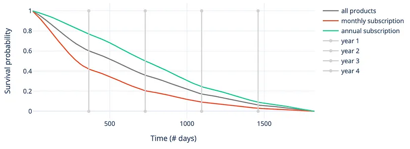
- Customers with a monthly subscription are more volatile, and they tend to churn more often and faster during the first years after their subscription
- Cox proportional hazards
- Proportional Hazards Assumption (for churn):
- If a customer has a risk of churn at an initial observation that is twice as low as another customer, then for all subsequent time observations, the risk of churn remains twice as low.
- Survival Function for 5 randomly selected customers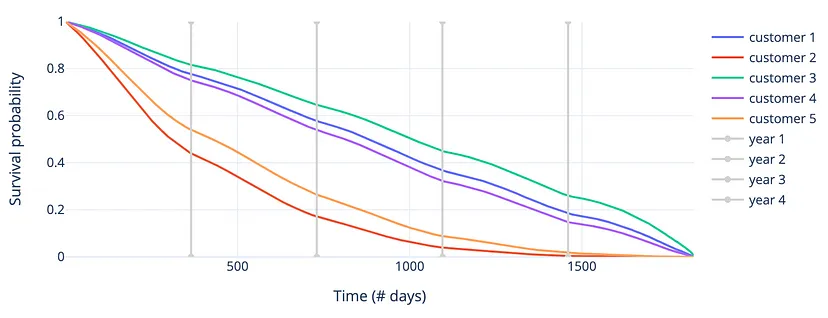
- Customer 2 is most likely to churn in the first few days, while customers 1, 3, and 4 are at much less risk
- Cumulative Hazards Function for 5 randomly selected customers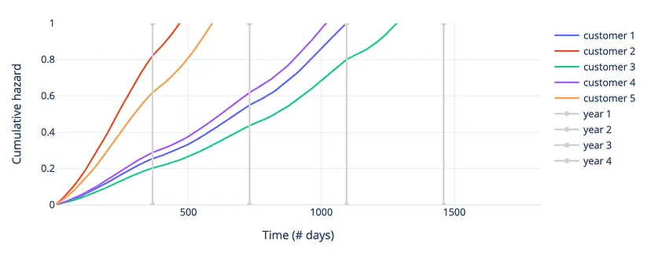
- Agrees with results of the survival function
- Coefficients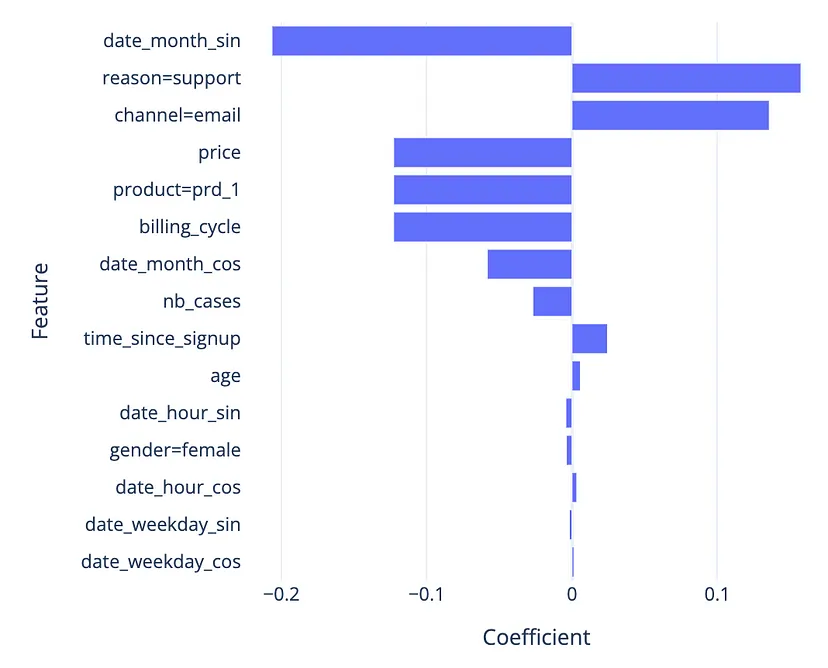
- Proportional Hazards Assumption (for churn):
- ML methods
- Also see Regression, Survival >> ML
- Using Dynamic AUC as the metric makes it possible to evaluate each model only on the time points that are most important in the context
- See Regression, Survival >> Diagnostics
- Results on the validation set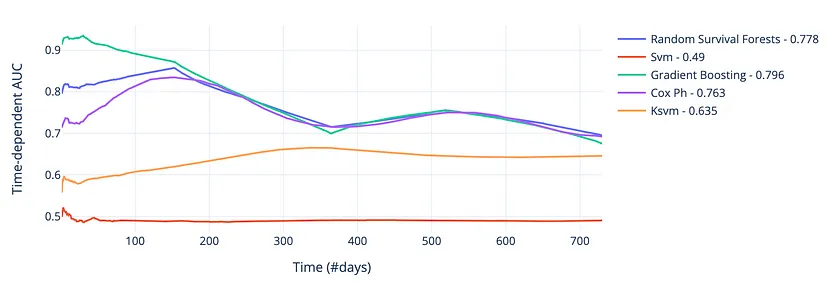
- Dynamic AUC scores over the first 2 years (see other charts)
- Not really much difference between the RF, GBM, and Cox PH models after about 200 days, but the GBM had the best average AUC over the 2-year period of around 0.80
- Data
- Diagnostics
- sensitivity/recall (how many of the clients who actually leave were detected by the model)
- in churn prediction we usually have higher costs on false negatives
- precision (how many of the clients identified by the model actually left)
- sensitivity/recall (how many of the clients who actually leave were detected by the model)